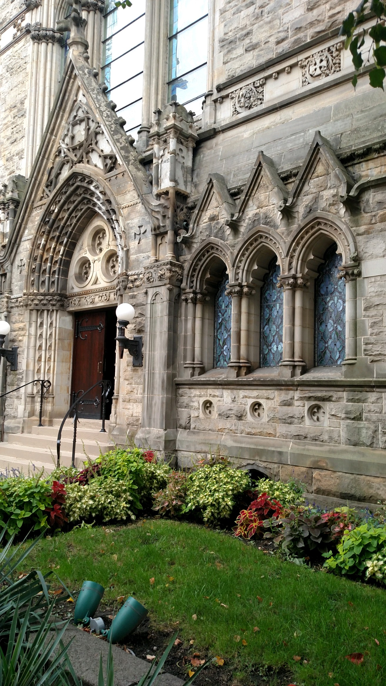

Calvary United Methodist Church
Calvary United Methodist Church is a gothic revival piece among the likes of The Cathedral of Learning and Saint Paul Cathedral. Much like the aforementioned cathedrals, this church features stunning gothic architecture. Founded in 1895, this church later became a Pittsburgh historic landmark in 1972. Additionally, in 1977 it became a part of the list of Pittsburgh's historic deisgnations 2 years later.
